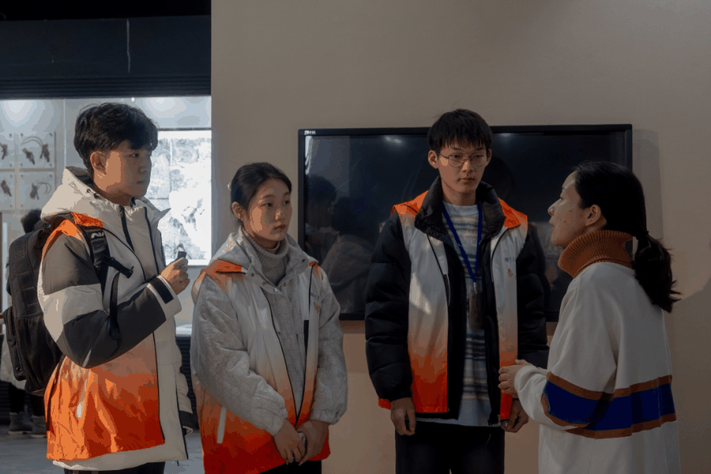
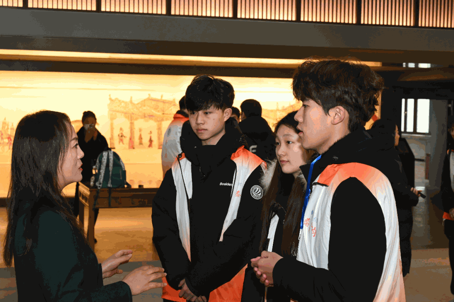
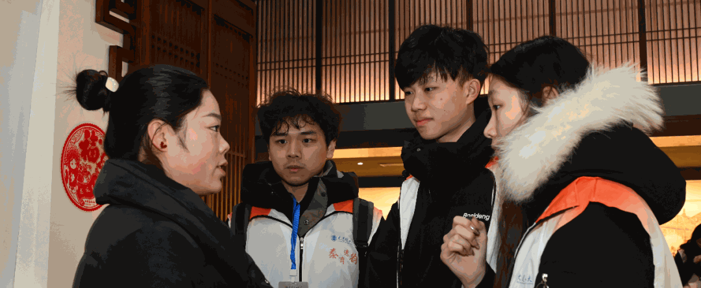
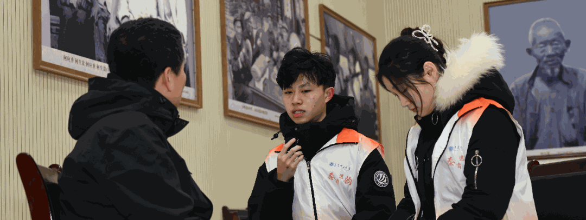
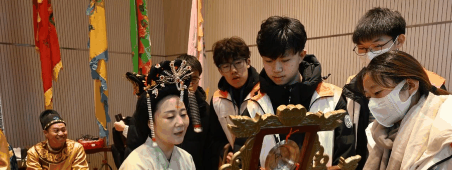

西安之行，每一步都踏在历史的脉搏上。碑林的碑刻、高家大院的皮影、非遗传承人的坚守，让我与千年前的智慧对话，深感文化传承的厚重与使命。


此次西安实践活动令我收获颇丰，每迈出一步，都似与千年前的古人并肩而行，脚下的每一寸土地都承载着厚重的历史底蕴，内心满是感慨。
初入碑林博物馆，肃穆气息扑面而来。碑刻上的道道刻痕，凝聚着古人智慧与记忆，跨越千年与我无声对话。与非遗体验馆馆长交流，如同开启一扇全新的认知之窗。馆长凭借深厚学识与独到见解，引领我深入非遗文化的神秘世界，让我对非遗的认知从模糊变得清晰。走进高家大院，仿若踏入历史画卷。在这里，我得以细品古人生活智慧。而精彩的皮影戏表演，搭配激昂秦腔，浓郁的陕西风情将我深深吸引，沉醉其中。



我还走访了西安非物质文化遗产博物馆和陕西省非物质文化遗产陈列馆。剪纸大师库淑兰的作品，以浓烈色彩、精巧图案深深震撼我。在回民街的群众街访，让我意识到大众对非遗文化的兴趣亟待提升。在 “楮皮纸制作技艺” 国家级传承人马松胜老师的作坊，我参与踏碓、切幡等造纸环节，亲身体验传统技艺魅力。于何家营鼓乐社，聆听千年隋唐民间鼓乐，郑社长的讲解，让我了解其渊源与传承不易。专访郑社长时，他对鼓乐传承的坚定信念令我深受触动。
最后，对易俗社五位演员的专访，让我听到他们对秦腔艺术的执着追求。从碑林到高家大院，从博物馆到传承作坊，这一路经历如珍珠般串联起我对传统文化的认知。传统文化是民族瑰宝，我们有责任守护、传承与创新，让它在新时代闪耀光芒。
- END -
来源 | 行者无疆实践团
图片 | 行者无疆实践团
文字 | 邢允辅
编辑 | 杩健辉
审核 | 李凌志 杩健辉
责编 | 邹靓靓